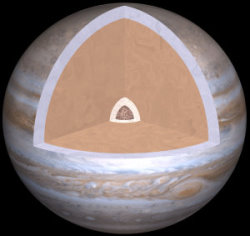

Jupiter est la cinquième planète du système solaire. Il s'agit d'une planète géante gazeuse. Elle effectue une rotation autour du Soleil en 11 ans, 10 mois et 15 jours. Elle tourne sur elle-même en 9h55. Jupiter est le quatrième objet le plus clair du ciel (après le Soleil, la Lune et Vénus). Elle est connue depuis la préhistoire.
La découverte de Galilée, en 1610, des quatre satellites de Jupiter Io, Europa, Ganymède et Callisto (maintenant appelés les lunes Galiléennes) fut la première découverte d'un mouvement non-centrée sur la Terre. Ce fut un point majeur en faveur de la théorie héliocentrique de Copernic.
Le diamètre de Jupiter est le diamètre limite pour une planète gazeuse. Si de la matière lui avait été ajoutée, Jupiter se serait comprimée par gravité de telle manière que le rayon total augmenterait seulement légèrement. (Si Jupiter avait été au moins 80 fois plus massive elle serait une étoile).
Jupiter étant une planète géante gazeuse elle ne possède pas de surface solide, sa matière gazeuse devient simplement plus dense avec la profondeur (les rayons et diamètres cités pour les planètes gazeuses ne peuvent pas être mesurés avec la surface donc ils le sont avec le niveau où la pression est de 1 atmosphère). Ce que nous voyons, lorsque nous regardons ces planètes, ce sont les sommets de leurs nuages.
Jupiter a un champ magnétique énorme, beaucoup de plus fort que celui de la Terre. Sa magnétosphère s'étend à plus de 650 millions de kilomètres (devant l'orbite de Saturne). Cette magnétosphère est loin d'être sphérique, elle s'étend seulement à quelques millions de kilomètres dans la direction du Soleil. Par conséquent les lunes de Jupiter baignent dans sa magnétosphère, ce qui explique l'activité de Io. Jupiter émet plus d'énergie quelle n'en reçoit (70% de plus). L'intérieur de Jupiter est chaud, son cœur est probablement approximativement à 20 000 K. Cette chaleur est produite par un mécanisme de Kelvin-Helmholtz et par la compression gravitationnelle lente de la planète. Observée depuis la Terre, Jupiter apparaît jaune-orange. Ceci est dû au Sulfure d'Ammonium et au phosphore présent dans son atmosphère.
STRUCTURE
Jupiter pourrait être composée d'un noyau rocheux de la taille de la terre. Ce noyau serait entouré d'hydrogène en phase métallique qui occupe 78% du rayon de la planète. Cet état serait liquide, un peu à la manière du mercure. Il est dénommé ainsi car la pression est telle que les atomes d'hydrogène s'ionisent, formant un matériau conducteur. Cet hydrogène métallique est lui-même entouré d'hydrogène liquide, à son tour entouré d'hydrogène gazeux